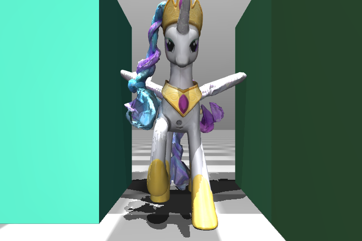
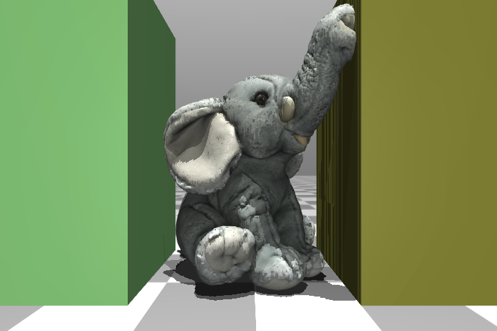
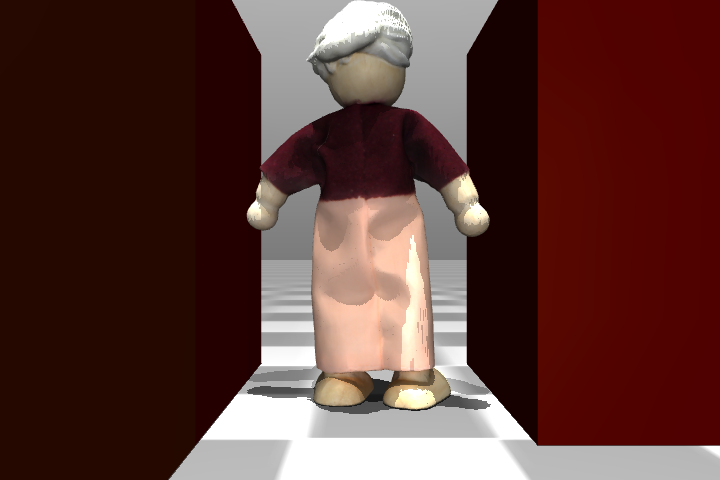
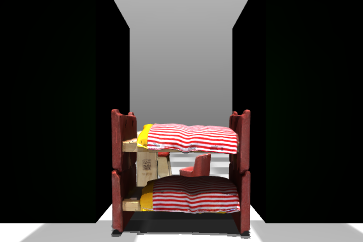
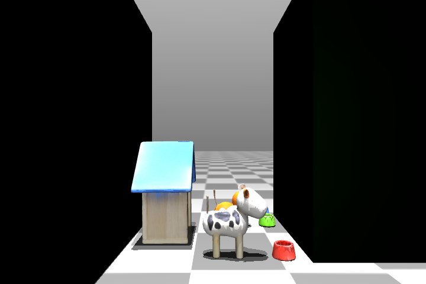
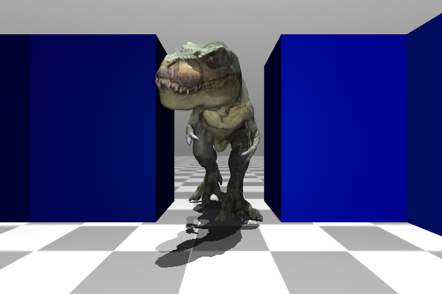
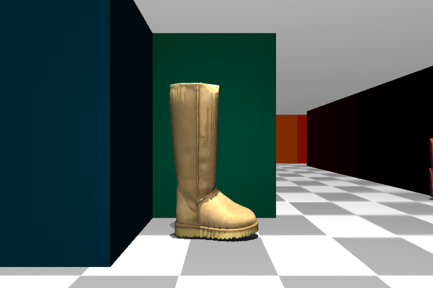
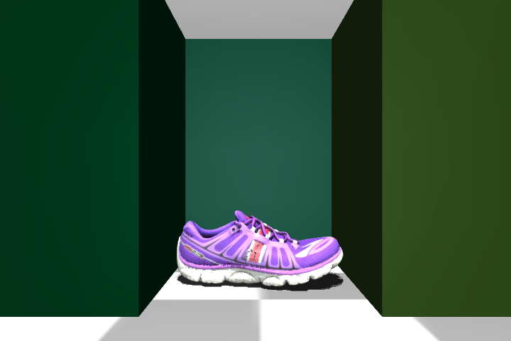

120 Minutes and a Laptop: Minimalist Image-goal Navigation via Unsupervised Exploration and Offline RL
Can we learn to image-goal visual navigate in an efficient and reproducible manner? We outline an end-to-end pipeline including data collection, policy learning, and real-world deployment. Our pipeline produces successful agents in under two hours on a laptop, across different embodiments, using only real-world data, and without any human intervention. All video results are displayed in real-time.
Real-world Deployment
MINav works well for cross-platform real-world deployment.
Quadruped
Wheeled
We evaluate our approach across two different robots. The left column shows the quadruped robot, while the right column shows the wheeled robot. The top row shows third-person view videos of both robots navigating to the same goal. The bottom three rows show first-person view videos of each robot successfully navigating to their respective goals. All videos are unedited and captured in real-time during deployment.
MINav shows robust performance under dynamic human interference.
We evaluate the robustness of our methdo in dynamic environment. During dynamic tests, a pedestrian continuously walks through the robot’s field of view, introducing persistent visual and spatial disturbance. Despite this challenge, our method still successfully navigates to the goal, demonstrating strong robustness to dynamic human interference. All videos are unedited and captured in real-time during deployment.
Compare with Foundation Navigation Models
GNM (Zero-shot)
Ours
We compare our method against a zero-shot foundation navigation model (GNM) under identical real-world conditions. The left column shows GNM and the right column shows ours. Our method demonstrates, for practical deployment in a specific environment, rapid in-domain learning with a small but high-quality dataset can be more effective than relying solely on zero-shot generalization from large foundation navigation models.
MINav scales favorably with dataset size.
Trained on 1-hour Dataset
Trained on 2-hour Dataset
We find that MINav benefits directly from autonomous data collection, with consistent gains across scene complexity. In simple scenes, increasing data collection from 1 hour to 2 hours improves the success rate from 85% to 100%. In standard and complex scenes, the same increase in data budget improves success rate from 38% to 85%.
Analysis: What Makes MINav Efficient?
Dataset coverage sets an upper bound on navigation policy performance.
We propose an unsupervised, nonparametric, and platform-independent exploration policy based on a new variant of pink noise, which we call Pink Uniform Noise. We first analyze how different exploration strategies affect the learned policy by comparing ours against alternative baselines.
| Exploration Noise | SR (%) ↑ | Time (s) ↓ | STL (%) ↑ |
|---|---|---|---|
| White Uniform Noise | 15 ± 10 | 26 ± 3 | 14 ± 10 |
| Pink Gaussian Noise | 30 ± 14 | 24 ± 3 | 27 ± 14 |
| Pink Uniform Noise (ours) | 43 ± 2 | 24 ± 2 | 29 ± 11 |
Why Pink Uniform Noise? Compared with white uniform noise, it preserves temporal structure and provides better state-space coverage, which is crucial for effective offline RL. Compared with pink Gaussian noise, pink uniform noise yields more balanced action-space coverage and avoids over-concentration on low-velocity actions, producing more diverse data and better performance under limited data budgets.
What does dataset coverage look like in practice?
We further analyze this in simulation by visualizing exploration trajectories and computing the entropy. The figure below summarizes exploration coverage and entropy under different exploration noise settings.

Coverage and Entropy Perspective. Pink uniform noise produces stronger action and state coverage, resulting in more complete trajectories. It consistently achieves the highest normalized state entropy, action entropy, and state-action joint entropy among all baselines. (for details on how we compute these metrics, please refer to the paper)
Simulation Experiments
Row 1: Goal Images








Row 2: Navigation Tests
BibTeX
@article{YourPaperKey2024,
title={Your Paper Title Here},
author={First Author and Second Author and Third Author},
journal={Conference/Journal Name},
year={2024},
url={https://your-domain.com/your-project-page}
}